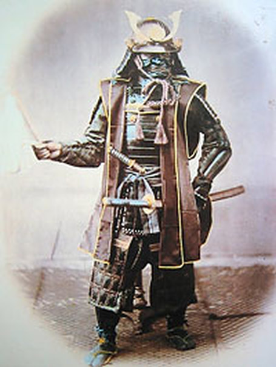
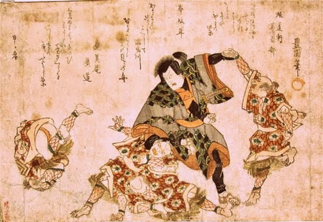

Early history
Jujutsu literally translates to “the flexible art”. This weaponless fighting method developed in Japan, drawing on indigenous battlefield grappling and Chinese influences. Japanese history records the grappling battles of great warriors — the earliest written down in the Nihon Shoki, the Chronicles of Japan, around 720 CE.
The fundamental principle is “ju” — flexibility, pliancy. Techniques target the body’s vulnerabilities through joint locks, throws, chokes, strikes and kicks. Because they could be lethal, practitioners traditionally trained through predetermined forms rather than free sparring, until school competitions gradually established informal rules.
Samurai training
As a military discipline, jiu-jitsu was one of the traditional “eighteen martial arts” expected of an accomplished samurai — alongside archery, spearwork, sword combat, horsemanship, swimming and more.
Early practitioners assumed both fighters would wear full Japanese armour, so punches and kicks were useless. The samurai refined armoured grappling instead — attacking the openings in armour and major joints like the elbow. The goal: throw the opponent head-first, or immobilise him completely.


The schools — ryu
Between 1530 and 1860, jiu-jitsu systems multiplied across Japan. The oldest system, Takeuchi, was founded in 1532 — and the Takeuchi family, now in its fifteenth generation, still practises and teaches today.
Most techniques originated in Japan, though China provided legendary inspiration. The Chinese visitor Chin Genpin (1587–1671) lodged at Kokushoji Temple in Edo, where tradition says he taught Chinese martial techniques to three ronin — who each went on to found influential jujutsu schools of their own.
Early grading
Traditional jujutsu schools had no coloured belts — Kano Jigoro introduced colour belts only in the 1880s. The old schools used certificates instead: shoden, chuden and okuden — the initial, intermediate and advanced secret teachings.
From armoured battlefields to the modern mat — the art bent, and never broke.
Today, traditional Japanese jiu-jitsu styles survive in small clubs across Japan — while the art’s greatest evolution happened an ocean away, in Brazil.